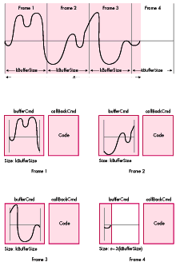
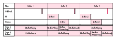
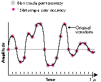

The main problem with digital audio is that the data often exceeds the amount of
available memory, forcing programmers to resort to multiple-buffering schemes.
This article presents one such technique, in the form of a program called MultiBuffer,
and explores some interesting things you can do along the way.
When dealing with digital audio, you're frequently going to find yourself in situations
where the sample you want to play won't fit in the memory you have available. This
leaves you with several alternatives: you can play shorter sounds; you can try to
squeeze the sound down to a more manageable size by resampling it at a lower
frequency or by compressing it (both of which will degrade the fidelity of the sound);
or you can try to fool the machine into thinking it has the whole sample at its disposal.
In cases where you don't want to compromise length or quality, trickery is your only
option.
If you've spent any time with the Sound Manager, you no doubt have run across the
routine SndPlayDoubleBuffer, which provides one reasonably straightforward method
of implementing a double-buffering scheme. The advantage of using
SndPlayDoubleBuffer is that it allows you to get a fairly customized double- buffering
solution up and running with very little work. You need only write a priming routine
for setting up the buffers and filling them initially, a DoubleBack procedure that takes
care of swapping buffers and setting flags, and a read service routine for filling
exhausted buffers; the Sound Manager handles all the other details.
SndPlayDoubleBuffer is in fact used by the Sound Manager's own play- from-disk
routine, SndStartFilePlay.
If your program will simply play from disk, your best bet is probably either
SndPlayDoubleBuffer or SndStartFilePlay. Both offer good performance painlessly,
saving you development time and avoiding the need to understand the Sound Manager to
any great degree. If, however, you want to do some snazzier things with your sound
support, such as adding effects processing, a deeper understanding of multiple
buffering is essential. Read on . . .
Audio support on the Macintosh computer is handled by the Apple Sound Chip (ASC),
which takes care of converting the digital representation of your sound back to analog,
which can then be played by a speaker attached to your Macintosh. (See "Sound: From
Physical to Digital and Back" for a description of this process.)
You can think of the ASC as a digital-to-analog converter with two 1K buffers to hold
the data to be processed. When either of the buffers reaches the half-full mark, the
ASC generates an interrupt to let the Sound Manager know that it's about to run out of
data. Because of this, it's important to makesure that your buffers are a multiple of
512 bytes, since in an attempt to keep the ASC happy the Sound Manager will pad your
data with silence if you choose an "odd" buffer size. In the worst case this can lead to
annoying and mysterious silences between buffers, and at best it will hurt your
performance. This doesn't mean that you need to limit yourself to 512- or 1024-byte
buffers: The Sound Manager takes care of feeding large buffers to the ASC a chunk at a
time so that you don't have to worry about it. As long as your sound is small enough to
fit into available memory, you can play it simply by passing the Sound Manager a
pointer to the buffer containing the sample.
Assuming that the ASC's buffers never run dry, it will produce what seems to be a
continuous sound. As long as you can keep handing it data at a rate greater than or
equal to the speed at which it can process the data, there won't be any gaps in the
playback. Even the best-quality samples, like those found on audio CDs, play back at
the leisurely rate of 44,100 sample frames per second (a frame consists of two
sample points, one for each channel of sound), a rate that the processors of 68020-
based Macintosh computers and SCSI devices can keep up with. All you need to do is
hand one buffer to the Sound Manager to play while you're filling another. When the
buffer that's currently playing is exhausted, you pass the recently filled one to the
Sound Manager and refill the empty one. This process is the digital equivalent of the
venerable bucket brigade technique for fighting fires.
This section discusses a general strategy for actually making a multibuffering scheme
work. First, however, I want to touch on some of the properties and features of the
Sound Manager that we'll exploit to accomplish multibuffering. If you're already
familiar with the Sound Manager, you may want to skip ahead to the section "When
You're Done, Ask for More."
CHANNELS, QUEUES, COMMANDS, AND CALLBACKS
The atomic entity in the Sound Manager is a channel. A channel is essentially a
command queue linked to a synthesizer. As a programmer, you issue commands to the
channel through the Sound Manager functions SndDoCommand and SndDoImmediate. The
Sound Manager executes the commands asynchronously, returning control to the caller
so that your application can continue with its work. The difference between the two
functions is that SndDoCommand will always add your request to a queue, whereas
SndDoImmediate bypasses the queuing mechanism and executes the request
immediately. It's important to understand that at the lowest level the Sound Manager
always executes asynchronously--your program regains control immediately,
whether the call is queued or not.
We're interested here in two sound commands, bufferCmd and callBackCmd.
WHEN YOU'RE DONE, ASK FOR MORE
The key to achieving continuous playback of your samples is always to have data
available to the ASC. To keep the ASC happily fed with data, your code needs to know
when the current buffer is exhausted, so that it can be there to hand over another
buffer. Most asynchronous I/O systems provide completion routines that notify the
application when an event terminates. Unfortunately, such a routine is not included in
the current incarnation of the output portion of the Sound Manager. In the absence of
a completion routine, the best way to accomplish this type of notification is to queue a
callBackCmd immediately following a bufferCmd. For the purpose of this discussion,
the bufferCmd-callBackCmd pair can be considered a unit and will be referred to as
aframe from here on. Since it's often not practical to play an entire sample in one
frame, you'll probably need to break it up into smaller pieces and pass it to the Sound
Manager a frame at a time. Figure 1 illustrates howa sample too large to fit in memory
is broken up into frames consisting of a bufferCmd and callBackCmd.
To further reinforce the illusion of a frame being a standalone entity, it's useful to
encapsulate the bufferCmd-callBackCmd pair in a routine. A bare-bones version of a
QueueFrame routine might look like this:
OSErr QueueFrame (SndChannelPtr chan, Ptr sndData)
{
OSErr err;
SndCommand command;
command.cmd = bufferCmd;
command.param1 = nil;
command.param2 = (long) sndData;
err = SndDoCommand (chan, &command, false);
if (err)
return err;
command.cmd = callBackCmd;
command.param1 = nil;
command.param2 = nil;
err = SndDoCommand (chan, &command, false);
if (err)
return err;
}
By queuing up another frame from the callback procedure, you can start a chain
reaction that will keep the sample playing. Be sure to have another frame ready and
waiting before the Sound Manager finishes playing the current frame. Failure to do
this will cause a gap in the playback of the sound, often referred to aslatency .
Two important factors that can cause latency are the speed of your source of sound data
and the total size of the buffers you're using. The faster your data source, the smaller
the buffer size you can get away with, while slower sources require larger buffers.
For example, if you're reading from a SCSI device with an average access time of 15
milliseconds, you can keep continuous playback going with a total of about 10K of
buffer space; if your source is LocalTalk, plan on using significantly larger buffers.
You may need to experiment to find the optimal buffer size.
A third factor that can contribute to latency is the speed at which your callback code
executes. It's very important to do as little work as possible within this routine, and
in extreme cases it may be advantageous to write this segment of your code in assembly
language. Of course, faster 68000-family machines will let you get away with more
processing; a routine that may require hand coding to run on a Macintosh Plus can
probably be whipped off in quick-and-dirty C on a Macintosh Quadra. As is the case
with all time-critical code on the Macintosh, it's important to take into account all the
platforms your code may run on.
Once you've compensated for any potential latency problems, this method of chaining
completion routines has a couple of advantages:

Figure 1 Dividing a Sample into Frames
Your callback procedure must take care of three major functions. It must queue the
next frame, refill the buffer that was just exhausted, and update the buffer indices. In
pseudocode, the procedure is as follows:
CallbackService ()
{
//
// Place the next full buffer in the queue.
//
QueueFrame (ourChannel, fullBuffer);
//
// Refill the buffer we just finished playing.
//
GetMoreData (emptyBuffer);
//
// Figure out what the next set of buffers will be.
//
SwapBuffers (fullBuffer, emptyBuffer);
}
The previous section discussed general tactics for multiple-buffering models and for
chaining callback routines; these would be used by any continuous play module.
MultiBuffer, included on theDeveloper CD Series disc, uses these basic concepts as its
foundation, but differs in several important ways in order to address some
performance issues and attain a higher level of flexibility.
Thus far the discussion has centered onplayback-driven buffering models, in which
the completion routine is keyed to the playback. This model, on which MultiBuffer is
based, is appropriate for applications that play from a storage device or that play from
synthesis. Playing from a real-time source, such as a sound input device or a data
stream coming over a network, requires asource-driven buffering model, in which the
callback is associated with the read routine. There's little difference between these two
models, but using the wrong model can lead to the loss of small amounts of sound data.
The major design goal for MultiBuffer was to make it modular enough to be easily
customized. It includes an independent procedure for reading data from the source
(ReadProc), as well as a procedure for processing the raw data obtained from the
ReadProc (ProcessingProc). MultiBuffer also allows you to work with more than two
buffers; simply modify the constant kNumBuffers. In some situations, more than two
buffers can be handy, such as instances where you want to reduce the lag between
playback time and real time. Several classes of filter require that you have a fairly
extensive set of data available for processing. Pulse-response filters, low- and
high-pass (first-order) filters, and spectral-compression filters are all examples of
applications in which multiple buffers can simplify implementation. It's important to
realize, however, that using many buffers introduces extra overhead, so your buffer
sizes will need to be correspondingly larger. Because of this added overhead, you can
end up in a Catch-22 situation; there is a point at which the benefit of having more
buffers is negated by the increase in buffer size.
The optional processing procedure allows you to perform some simple modifications on
the data before it's played. It's vital that you keep the issue of latency in mind when
dealing with your processing procedure; it can have a profound effect on the amount of
time required to ready a buffer for play. Since this is a time-critical section of the
buffering code, it's often desirable to write this procedure in assembly language to
squeeze out the highest performance possible.
Because the procedures for reading sound data and for processing the data are separate
modules, MultiBuffer is quite flexible. The program includes a simple example of this
flexibility. One of the playback options is to play an Audio Interchange File Format
(AIFF) file backward. To achieve this, I altered ReadProc to read chunks of the target
file from end to beginning, then used ProcessingProc to reverse the contents of the
buffer. If you take a look in PlayFromFile.c, you'll find that the differences between
the functions ReadProc and ProcessingProc and their counterparts BackReadProc and
BackProcessingProc are minimal.
HOW IT HANGS TOGETHER
MultiBuffer is basically a series of three sequentially chained interrupt routines.
These are the callBackProc, a read completion routine, and a deferred task that takes
care of any processing that needs to be done on the raw data. Deferred tasks are
essentially interrupt routines that get put off until the rest of the regularly scheduled
interrupts have completed. A deferred task won't "starve" important interrupts
executing at a lower priority level. Such tasks also have the advantage of executing
when interrupts have been reenabled, allowing regular interrupt processing to
continue during their execution. Unfortunately, a deferred task is still bound by the
restrictions on moving or purging memory placed on regular interrupt routines.
The routine DoubleBuffer begins the execution. It takes care of setting up private
variables, priming the buffers, and initiating the play that starts the chain reaction.
MultiBuffer is composed of six main files, each of which deals with one of the
functional aspects of MultiBuffer.
The rest of this article goes into gory detail on the inner workings of MultiBuffer.
You'll find this helpful if you plan on modifying the code to suit your own needs, or if
you want to gain a painfully in-depth understanding of the processes involved.
CONSTANTS
There are only two constants you need to worry about.
kBufferSize. This indicates the size of the buffer in bytes. The larger this value, the
more time you have between buffer switches. It should be a multiple of 512.
kNumBuffers. The value of this constant determines the number of buffers that
MultiBuffer uses. In most cases, this value should be 2.
IMPORTANT DATA STRUCTURES
Listed here are some of the important data structures used by MultiBuffer. All of them
can be found in the file DoubleBuffer.h.
typedef struct {
ParamBlockHeader
short ioFRefNum;
long filler1;
short filler2;
Ptr ioBuffer;
long ioReqCount;
long ioActCount;
short ioPosMode;
long ioPosOffset;
} strippedDownReadPB, *strippedDownReadPBPtr;
The strippedDownReadPB structure is the minimal parameter block the Device
Manager needs in order to execute a read from a file. A primary concern was keeping
MultiBuffer's overhead very low, and since each buffer needs to have a parameter
block associated with it, using the full-blown ParamBlockRec was undesirable.
typedef struct {
strippedDownReadPB pb;
Ptr userInfo;
short headerNum;
} ExtParamBlockRec, *ExtParmBlkPtr;
ExtParamBlockRec is a wrapper that adds a few pieces of MultiBuffer-specific
information to the end of a parameter block. It allows us to get information about the
state of the program to the completion routine without using any globals, which would
make for ugly code.
typedef struct {
short flags;
ExtParamBlockRec readPB;
DeferredTask dt;
SoundHeaderPtr header;
} SampleBuffer, *SampleBufferPtr;
SampleBuffer contains all the information necessary for managing samples. The flags
field holds the current status of the buffer. The readPB field is the parameter block the
Device Manager uses to read the data from the source. Since it's possible that you'll
have more than one asynchronous read queued at a time, reusing parameter blocks is
inadvisable, hence the need for one associated with each buffer. The dt field is a
deferred task record that will be used to install the ProcessingProc. The header field is
a pointer to a sound header that the Sound Manager uses to play a sample. Note that the
sound header definition, found in Sound.h, contains a samplePtr that will have a
nonrelocatable block associated with it for holding the actual sample data.
typedef struct {
OSType signature;
long refNum;
long fileDataStart;
long bytesToGo;
short currentBuffer;
SampleBuffer buffers[kNumBuffers];
SndCommand bCmd;
SndCommand cbCmd;
SndCallBackProcPtr oldCallBack;
long oldUserInfo;
long a5ref;
} PrivateDBInfo, *PrivateDBInfoPtr;
PrivateDBInfo is a private data structure that contains all the information
MultiBuffer requires to do its thing. The refNum field contains the reference number
of the file or device that contains the sound data we're going to play. As implemented
here, MultiBuffer reads information from a file on an HFS device, so refNum will
contain a File Manager file reference number. It's also possible to use a sound input
device or the network as the source for your sound data. In such cases refNum would
contain a sound input device reference number or an AppleTalk unit reference
number, respectively. The field fileDataStart contains the position in the file at
which the actual sound data starts; since AIFF files and resources can contain tens of
bytes of header information, it's important to be able to locate the start of our data.
The bytesToGo field keeps track of the number of bytes of sound data to be played. This
field may not be meaningful in the case of continuous sound sources, since the data
stream doesn't necessarily have a definite end.
The currentBuffer field contains the number of the buffer that's currently playing.
This field can actually be thought of as an index into the array of SampleBuffers. In
this array, buffers[kNumBuffers] contains the information needed for actually
playing the sound through the Sound Manager (and some other convenient goodies, too).
bCmd and cbCmd are sound commands that are used to send a frame off to be played by
the Sound Manager. bCmd contains the information necessary to issue a bufferCmd, and
cbCmd is used to issue a callBackCmd. Both of these structures are used frequently
with little modification; by having them preinitialized and easily accessible to the
routines that need them, we save a few instructions. oldCallBack and oldUserInfo are
holding spots for any userInfo and callBack data stored in the SndChannel data
structure before MultiBuffer was called. MultiBuffer places its own information in
the userInfo and callBack fields, so it's important to save and restore any values that
may have been lurking there previously.
a5Ref contains a reference to the application's A5 world, so that we can access the
global variables that MultiBuffer uses at times when A5 may be invalid, such as at
interrupt time.
THE ROUTINES
This section describes support routines that make up MultiBuffer, many of which can
be used unchanged in your own code.
short OpenAIFFFile (void)
Found in: AIFFGoodies.c
OpenAIFFFile is a pretty generic Standard File-based routine that filters out all file
types other than 'AIFF' files. After the user selects a file, this routine opens it and
returns the file reference number or an OSErr.
long GetAIFFHeaderInfo (short frefNum, SoundHeaderPtr theHeader)
Found in: AIFFGoodies.c
GetAIFFHeaderInfo is an example of how to parse the header information out of an AIFF
file. The basic strategy is to read pieces of the header into a buffer, where a struct
template can be overlaid onto the data, making the values easy to access. Important
information from the AIFF file can then be put into a SoundHeader data structure,
which will be used later when data is passed to the Sound Manager for playing. The
routine provided in MultiBuffer extracts only the sound data parameters, such as the
length, sample rate, sample size, and number of channels. Other chunks are currently
ignored, although the code is there to support siphoning the information out of them.
GetAIFFHeaderInfo leaves the file mark at the beginning of the sound data and returns
the number of bytes of sound data in the file.
One limitation of the current implementation of this routine is that it deals only with
8-bit monophonic sounds.
OSErr RecordAIFFFile (OSType creator)
Found in: AIFFGoodies.c
RecordAIFFFile uses the sound input routine SndRecordToFile to record a sound to an
AIFF file. In preparation for this, it uses the Standard File Package to select a file to
record to and opens the file, creating it if it doesn't exist, clearing it if it does. One of
the great features of the sound input portion of the Sound Manager is that it provides
routines with standard user interfaces for recording. As this routine illustrates, all
you need to worry about is passing a valid file reference number and quality selector
to SndRecordToFile; the rest is taken care of.
OSErr DoubleBuffer (SndChannelPtr chan, unsigned long fileRefNum,
ProcPtr readproc, ProcPtr processproc,
SoundHeaderPtr generalHeader, unsigned long playSize,
long dataOffset, Ptr *privateData)
Found in: DoubleBuffers.c
DoubleBuffer is the main application interface to the buffering routines. It takes care
of all the setup required as well as initiating the buffering "chain reaction." In the
spirit of a picture being worth a thousand words, the routine follows.
OSErr DoubleBuffer (SndChannelPtr chan, unsigned long fileRefNum,
ProcPtr readproc, ProcPtr processproc,
SoundHeaderPtr generalHeader,
unsigned long playSize, long dataOffset)
{
OSErr err = noErr; // error bucket
PrivateDBInfoPtr dbInfo = nil;
// Clear the global stop flag.
gsStopFlag = false;
// We're going to use a PrivateDBInfo structure to hold all
// the information we'll need later on to do our double
// buffering. The next several lines of code deal with
// allocating space for it and its members and initializing
// fields.
dbInfo = SetUpDBPrivateMem ();
if (dbInfo != nil) {
DebugMessage ("\p Allocated dbInfo successfully");
// Return a pointer to MultiBuffer's private data structure
// so the caller can dispose of it when the operation
// finishes.
*privateData = (Ptr)dbInfo;
// Install the read procedure. This is mandatory.
if (readproc == nil) {
Assert (readproc == nil, "\pNo readproc specified");
FreeDBPrivateMem (dbInfo); // say bye to memory
} else {
DebugMessage ("\p Have a valid readproc");
dbInfo->readProcPtr = readproc;
// Install the processing procedure (if any). Lack of a
// processing procedure knocks one level of interrupt
// processing out, so this is a good way to save time
// and decrease the minimum buffer size.
dbInfo->processingProcPtr = processproc;
dbInfo->refNum = fileRefNum; // store file ref num
dbInfo->a5ref = SetCurrentA5 ();
// We're essentially going to take over the specified
// sound channel to do double buffering with it; as a
// result, we'll install our own callback and put
// private data structures in the userInfo field. We're
// going to save the values that were there when we
// started, in case they shouldn't be stomped on.
if (chan->userInfo) // valid userInfo?
dbInfo->oldUserInfo = chan->userInfo; // save it
chan->userInfo = (long) dbInfo; // pointer to our vars
DebugMessage ("\pAbout to prime buffers");
dbInfo->bytesToGo = playSize; // set up play size
dbInfo->fileDataStart = dataOffset;
// offset into data stream
err = PrimeBuffers (dbInfo, generalHeader);
// fill buffers
if (err != noErr) {
// If we got to here, we got one [censored] of an
// error trying to read the buffers, so now we
// commit programmatic seppuku.
Assert (err != noErr,
"\pHit an error trying to Fill buffers");
FreeDBPrivateMem (dbInfo); // say bye to memory
} else {
DebugMessage ("\pSuccessfully primed buffers");
// Presumably at least one of our buffers has been
// filled, so let's set the chain reaction in
// motion. Note that there is a possibility that we
// got only one buffer half full. No worries: the
// callback routine will handle that nicely!!
dbInfo->bCmd.cmd = bufferCmd;
dbInfo->bCmd.param1 = nil;
dbInfo->bCmd.param2 =
(long) dbInfo->buffers[0].header;
dbInfo->cbCmd.cmd = callBackCmd;
dbInfo->cbCmd.param1 = nil;
dbInfo->cbCmd.param2 = nil;
err = QueueFrame (chan, dbInfo);
DebugMessage
("\pJust finished queueing up the first frame");
}
}
}
return (err);
}
OSErr QueueFrame (SndChannelPtr chan, PrivateDBInfoPtr dbInfo)
Found in: DoubleBuffers.c
QueueFrame takes care of passing a bufferCmd containing the sound data to be played
followed by a callBackCmd to the Sound Manager, making sure that the data is valid.
QueueFrame also updates the pointer to the next buffer to be played.
pascal void DBService (SndChannelPtr chan, SndCommand* acmd)
Found in: DoubleBuffers.c
When the Sound Manager receives a callBackCmd indicating that a buffer has finished
playing, DBService queues up the next buffer in line to be played and calls the
user-specified ReadProc to refill the exhausted buffer.
void CompleteRead (void)
Found in: DoubleBuffers.c
Upon completion of the asynchronous read queued by ReadProc, CompleteRead is called
to handle errors and queue up a deferred task to perform any processing necessary on
the freshly read data. Note that this routine uses the inline functions getErr and
getPB to retrieve the error value from register D0 and a pointer to the parameter
block from register A0, respectively.
OSErr ReadProc (void *private, short bufNum, Boolean asynch) OSErr BackReadProc (void *private, short bufNum, Boolean asynch)
Found in: PlayFromFile.c
ReadProc is one of the few routines you may want to modify for your specific
application. It takes care of reading data from the input source--in this case an AIFF
file on a hard disk.
The three versions provided in the MultiBuffer application are ReadProc,
BackReadProc, and WaveReadProc. ReadProc reads data starting at the mark and
moving forward, BackReadProc starts at the end of the data and reads toward the start,
and WaveReadProc fakes a continuous stream of data from a wave snippet by filling the
buffer with copies. By replacing ReadProc, you can easily customize the behavior of
your application.
void ProcessingProc (void) void BackProcessingProc (void)
Found in: PlayFromFile.c
The ProcessingProc routine does any processing needed on the freshly read buffer. The
amount of time you can spend in this routine depends directly on the size of your
buffers. This is one of the key areas in which latency problems can occur.
In the MultiBuffer code, ProcessingProc simply converts from 2's complement
notation to binary offset notation. BackProcessingProc reverses the buffer as well as
converts it. AIFF files are by definition in 2's complement notation, whereas the Sound
Manager understands only binary offset notation, making this conversion necessary.
Binary offset notation is a somewhat peculiar format; its zero point is at $80. $FF
corresponds to the maximum amplitude and $0 is the minimum amplitude of a wave.
If you're planning on doing any processing on your data, it's strongly recommended
that you write the code in assembly language, since your code will likely execute far
faster.
OSErr PrimeBuffers (PrivateDBInfoPtr dbInfo)
Found in: DoubleBuffers.c
PrimeBuffers fills each of the allocated buffers with data. This gives the buffering
routines some data to work with on the first trip through the buffering cycle.
An interesting aspect of this routine is that it uses ReadProc to get the data from the
source and ProcessingProc to transform it to the desired state.
PrivateDBInfoPtr SetUpDBPrivateMem (void)
Found in: DoubleBuffers.c
SetUpDBPrivateMem allocates memory for the PrivateDBInfo data structure and
initializes its fields.
void FreeDBPrivateMem (void *freeSpace)
Found in: DoubleBuffers.c
FreeDBPrivateMem releases all the memory allocated by SetUpDBPrivateMem. Zowee.
pascal long getPB ()
Found in: DoubleBuffer.h
When a completion routine is called, register A0 will contain a pointer to the
parameter block of the caller. Since MPW C doesn't have support for directly accessing
registers, the inline function getPB moves register A0 onto the stack, where the C
compiler can figure out how to assign it to a variable.
pascal short getErr ()
Found in: DoubleBuffer.h
The getErr function does the same thing as getPB, except that it deals with the error
code (found in register D0) instead of the parameter block pointer.
pascal SampleBufferPtr getDTParam ()
Found in: DoubleBuffer.h
The Deferred Task Manager places an optional argument to its service routine in
register A1. As was true with getPB and getErr, we need to use an inline assembly
function, getDTParam, to retrieve the argument.
pascal void CallDTWithParam (ProcPtr routine, SampleBufferPtr arg)
Found in: DoubleBuffer.h
So that we don't need to have two copies of ProcessingProc present, the inline function
CallDTWithParam allows you to call a deferred task service routine with an argument
directly. It takes the argument passed to it and puts it in register A1, then JSRs to the
service routine.
pascal void QuickDTInstall (DeferredTaskPtr taskEl)
Found in: DoubleBuffer.h
The QuickDTInstall procedure saves us a few cycles by bypassing the trap dispatcher
when we install a deferred task service routine. The address of the service routine is
loaded into A0, then we jump directly to the installation procedure pointed to by the
low-memory global jDTInstall.
This is one of the few legitimate reasons to access a low-memory global, but it can
potentially get you in trouble. It works fine under system software through version
7.0.1, but is certainly a future compatibility risk. The alternative is to call DTInstall
in the normal manner, but even the few milliseconds you spend in the trap dispatcher
will have an adverse effect on the amount of processing you can do on your sounds.
pascal void Reverse (Ptr buffer, long length)
Found in: PlayFromFile.c
The Reverse routine does the real processing on the freshly read buffer. It reverses
the buffer passed to it as well as converting it from 2's complement notation to binary
offset format.
Ptr NewWaveForm (unsigned char amplitude, unsigned short frequency)
Found in: Oscillator.c
NewWaveForm generates a waveform based on the values most recently read from the
controls in the application window. Amplitude must be a value between 0 and $80,
while frequency can be anything within reason. This routine returns one cycle of the
waveform requested.
TIPTOE THROUGH THE INTERRUPTS
As you've probably gathered from the descriptions of the routines, MultiBuffer is
essentially a maze of self-perpetuating interrupt routines. This makes keeping track
of what's happening at any given moment a real pain, not to mention that it severely
complicates debugging. In the interest of sparing you a headache or two trying to figure
out the flow of processing, let's walk through a bit of MultiBuffer's execution.
Initialization. This particular phase of execution happens at normal run time and is
fairly uninteresting. The process is as follows:
The chain reaction. The last thing that happens in the DoubleBuffer routine is a
call to QueueFrame, which places a bufferCmd followed by a callBackCmd in the
channel's queue. Since both these operations will be executed asynchronously, control
returns immediately to DoubleBuffer and subsequently to your application.
Figure 2 illustrates how things unfold from here. The buffer flags are set to
kBufferPlaying, to indicate that the buffer is busy. As soon as the first buffer is
exhausted, its associated callBackCmd causes an interrupt that transfers control to
DBService, where the next frame is queued, assuming its flags indicate readiness
(kBufferReady). To keep things going smoothly, a read is issued to refill the recently
exhausted buffer, and its flags are set to kBufferFilling. At this point, control returns
to whatever process was going on when the callBackCmd generated the interrupt.

Figure 2 The Illustrated Execution, or What Happens When
The next phase starts as soon as the read queued in DBService completes, transferring
control (again, at interrupt time) to the completion routine CompleteRead. If a
processing procedure has been installed, a deferred task is initiated for the buffer, and
its flags are set to kBufferProcessing. Upon completion of the processing procedure,
the buffer's flags are reset to kBufferReady and control returns to the main stream of
execution.
The importance of using a deferred task may not be obvious, since it would seem to
make sense just to call ProcessingProc at the end of CompleteRead. Doing so, however,
would cause the program to spend too much time in the interrupt service routine,
shutting out other critical functions being performed at a lower interrupt priority.
Using a deferred task also means that the processing procedure executes after
interrupts have been reenabled, which allows us to spend a little more time processing
without causing the system to grind to a halt and die. Remember, though, that the total
amount of time required to read in a new chunk of data and process it cannot exceed the
time it takes to play a buffer, or you'll run into latency problems.
Customizing MultiBuffer simply involves replacing ReadProc and ProcessingProc
with your own routines.
ReadProc should take care of reading data from some source. It needs to fill the buffer
indicated by the argument bufNum with sound data. It should have the ability to behave
synchronously or asynchronously as indicated by the asynch argument. Remember to
specify CompleteRead as the completion routine; otherwise MultiBuffer won't work.
Depending on the device that you're reading from, you may have to use a different type
of parameter block. strippedDownReadPB is a minimal parameter block for use with
the File Manager; AppleTalk and the input portion of the Sound Manager will both
require substituting a different parameter block for the strippedDownReadPB. All you
need to modify is the definition of the data structure ExtParamBlockRec in
DoubleBuffer.h. ReadProc often executes at interrupt time, so the prohibitions
against anything like moving or purging memory apply.
You absolutely must have a ReadProc. The ProcessingProc, on the other hand, is
optional. If specified, this routine allows you to do some limited processing on the data
read from the source before it goes off to the Sound Manager to be played. Since this is
a deferred task service routine, the argument is placed in A1. MultiBuffer passes this
routine a pointer to the SampleBuffer to be processed. You can do anything you want to
this buffer, as long as it completes relatively quickly. Remember, this is the routine
that's often responsible for causing latency problems.
While this doesn't necessarily require writing additional code, DoubleBuffer expects a
generic sound header for the data you're interested in playing. The only information
you really need is the samplerate and the base note, since MultiBuffer sets up the
other fields in the sound header. In the case of AIFF files, this requires parsing the
header information in the file; for the wave-play operation, fudging a header with
constants that describe the type of wave is acceptable.
IMPLEMENTATION EXAMPLES
To show how you might customize MultiBuffer, I've provided a couple of routines that
make use of the package. Both have examples of how to implement a ReadProc, and the
play-from-file example also takes advantage of a ProcessingProc.
PlayFromFile. PlayFromFile.c contains routines that play an AIFF file. These are
good examples of how you can use alternate ReadProcs and ProcessingProcs to
customize the output of your data.
PlayFromSynth. PlayFromSynth.c and Oscillator.c contain the routines necessary to
implement a basic sine wave synthesizer. The only really notable feature of this
implementation is the use of the refNum field of the PrivateDBInfo structure as a
pointer to a single wave cycle. My thinking here was that refNum really points to the
data source, unlike a traditional refNum, so why not use it as such?
FUN THINGS TO DO WITH MULTIBUFFER
Here are a couple of ideas for other processing options you might consider
implementing in MultiBuffer's ProcessingProc:
A FEW WORDS ON DEBUGGING
Conditional compilation flags. If you take a look at BuildMultiBuffer, the
makefile for MultiBuffer, you'll see -Debug and -Verbose as possible compilation
options. These are triggers for Debug messages that can be compiled into the code to
help you figure out where the code is failing during development. The advantage of this
scheme is that when undefined, the Assert and DebugMessage macros evaluate to
(void), which the compiler happily optimizes out.
The general form of this kind of macro is
#if _TRIGGER
#define SomeFunction(s) SomeFunctionOfS (s)
#else
#define SomeFunction(s) ((void) 0)
#endif
These can be really useful if you want to generate different types of executables
without resorting to multiple parallel source files.
Why debugging interrupt routines is painful. There are two significant
problems with debugging interrupt routines. Using a debugger that leaves interrupts
enabled (such as TMON) means that you may not be able to observe a "steady state" of
your code. Using a debugger that disables interrupts (such as MacsBug) allows you to
see a snapshot of the system, but you run the risk of killing the system if you stay in
the debugger for any length of time.
As you can imagine, this can make getting an accurate picture of what's really
happening nearly impossible. As a result, the approach used in MultiBuffer was to
leave a "bread crumb" in the debugger so that one could go back later and see what
happened. You'll notice that in routines that are going to be executed at interrupt time
the debugging statements have the form
Assert (err, "\p Some Message; g");
DebugMessage ("\p Another Message; g");
This causes MacsBug to log a copy of "Some Message" in its window and return
immediately to the routine. This gets you out of MacsBug quickly enough to avoid
causing problems. From the log left in MacsBug, you can often narrow down the cause
of the problem. TMON, to the best of my knowledge, doesn't have a similar feature, so
MacsBug is really the tool of choice for debugging MultiBuffer. Be careful when
running debug versions of MultiBuffer with TMON installed, as Assert and
DebugMessage statements executed at interrupt level can leave you in the debugger.
The message you should be especially watchful for is "Tried to queue a buffer that
wasn't ready." This indicates that QueueFrame attempted to play a buffer that wasn't
marked kBufferReady, and usually indicates that you're taking too much time in your
ReadProc or ProcessingProc. The solution here is to either increase the size of your
buffers or reduce the amount of time you spend in your read and processing routines.
MultiBuffer provides one example of how to play sounds that are too large to fit in
memory. Its theory of operation is very similar to that of the Sound Manager routine
SndPlayDoubleBuffer in that the buffer-refreshing mechanism keys off the play
completion routine; this class of buffering algorithm is appropriate for
play-from-disk and related applications.
Adding sound support to your application can greatly enhance your user's experience.
Once you have an understanding of a few simple principles, it's also fairly simple. To
that end, I hope that MultiBuffer is useful in enhancing your understanding of some of
these issues.
What you experience when you hear a sound is actually your ear picking up a series of
pressure changes, commonly thought of as waves, in the ambient air. Through a bunch
of physiological magic, the ear converts these pressure changes to a neural signal that
your brain can then recognize as your alarm clock or Chopin, depending on the
waveform. Both the waveform and its neural equivalent are analog, which is useless as
far as your computer is concerned. To get the analog phenomena into your machine, you
need to use some sort of transducer (a microphone, for instance) and an
analog-to-digital converter such as the sound input hardware found in most Macintosh
models.
Like your ear, the microphone picks up minute pressure changes in the air, but it
produces an electrical signal that the analog-to-digital converter turns into a stream
of numbers corresponding to the voltage (amplitude) of the signal. Each of these
numbers is a discrete sample point , and the collection of sample points that define the
waveform are collectively known as a sample .
In an ideal world your sample would be continuous, meaning that there would be an
infinite number of sample points for any given time period. The reality is that
analog-to-digital (and digital-to-analog) converters can handle only a finite number
of sample points per second, so the concept of sample frequency becomes important.
The higher the frequency, the better the sample approximates the original waveform.
The sample frequency is usually expressed in kilohertz, which gives the number of
sample points per microsecond. Common sample rates are 7 kHz, 11 kHz, and 22 kHz,
though the Sound Manager currently supports any sample rates between 1 kHz and 22
kHz. In practice, it's best to stick to an even divisor of 22 kHz, since it minimizes the
number of hoops the software needs to jump through to play your sound.
Another factor that affects the fidelity of the sample is its quantization , which is
related to how many bits are used to describe each sample point. The Sound Manager
currently supports only 8-bit samples, which is sufficient for most applications.
The digitized sound is stored either in memory or on a more permanent storage
medium such as a hard disk or CD-ROM. The important thing to take away from this
discussion is that in order to get high-quality samples, you need to have a high
sampling rate and a reasonable sample size (read: lots of memory).Converting samples
back into sound is exactly the reverse of the recording process. The data goes to a
digital-to-analog converter, which generates a specific voltage based on the digital
value handed to it. After some sort of amplification, these voltages cause a speaker to
emit an "image" of the originally sampled waveform.
The following figure shows a 1-microsecond snapshot of a waveform sampled at a rate
of 22 kHz and digitized at sample sizes of 8 and 16 bits. The dots show how much the
digitized waveform can vary from the original waveform at each sample size. The
16-bit size gives a better approximation of the original waveform, but eats up a lot of
memory.

NEIL DAY When Neil isn't glued to his Macintosh, working on one of his various
programmatic whatnots, you can usually find him strapped to a piece of sporting
equipment leaping off something. Neil's favorite jumping-off points are waves, cliffs,
and cornices, in that order.*
THANKS TO OUR TECHNICAL REVIEWERS Rich Collyer, Leo Degen, Jim Mensch,
Jim Reekes *